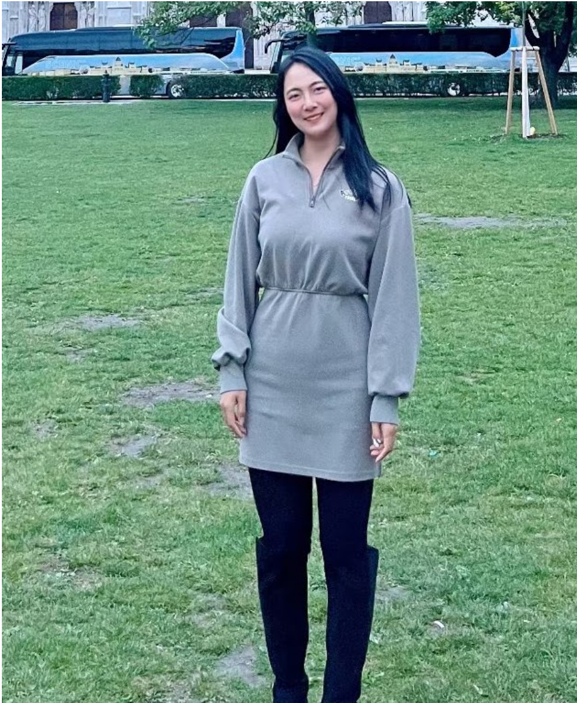

NIH / NCI K99–R00 AWARDEE · DUKE UNIVERSITY
AI for the
complexity of
living systems.
I build interpretable methods to map cellular ecosystems and uncover what complex biological data can tell us about cancer.

How can better computational tools help us understand biology at its most complex?
Research overview ↗Keep the tissue context; explore the differences in spatial expression across three outputs.
Original xMINT overview · View full figure ↗. Output genes and color scale are not specified in this overview.
Select a molecule to explore its role in the signaling cascade.
Simplified biological example, not an xGATE result. Arrows indicate signaling steps, including indirect steps. EGFR · RAF–MAPK / Reactome ↗
01 / INPUTS — H&E morphology and a targeted gene panel provide complementary views of the tissue.
Original xMINT overview · View full figure ↗. Output genes and color scale are not specified in this overview.
Connect the cell
to its context.
Explore spatial expression outputs from the xMINT overview alongside their tissue morphology.
Explore the research ↗Recent news.
Curious about a collaboration or academic opportunity?
Get in touch ↗